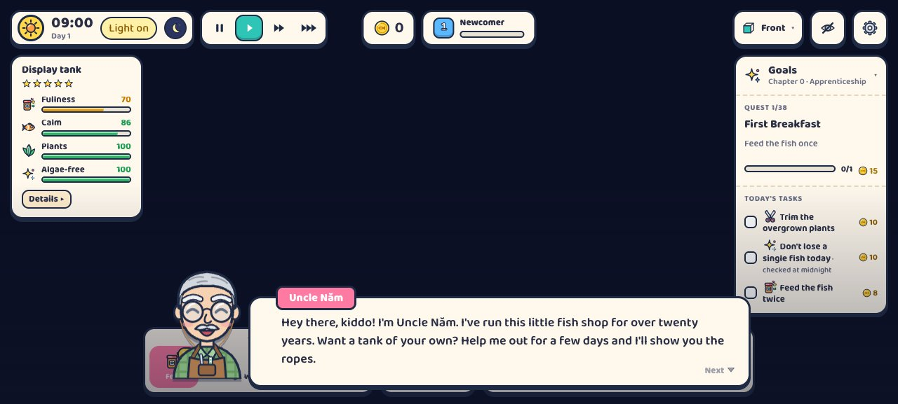

Chúng mình vừa lưu lại một trò chơi nhỏ chạy ngay trên trình duyệt tên là Aqualator. Đây là game nuôi cá, không liên quan trực tiếp đến AI. Chúng mình vẫn đưa nó vào Lazy AI Guide vì nó là ví dụ rất rõ cho một ý: một trò chơi nhỏ trên web có thể nhỏ gọn, dễ thương và có cốt truyện, và các bạn có thể nhờ AI làm một trò tương tự cho riêng mình.
Aqualator là gì
Aqualator là game mô phỏng tiệm cá cảnh theo phong cách "cozy", tức là nhẹ nhàng, không có áp lực thắng thua. Trên trang, game tự giới thiệu bằng một câu: "Raise fish, grow plants, build your own aquarium." Tạm dịch là nuôi cá, trồng cây, dựng bể cá của riêng mình.
Các bạn mở game ở địa chỉ https://www.aqualator.cloud/. Game không cần tài khoản. Nó chỉ lưu một mã ẩn danh ngay trong trình duyệt của các bạn. Giao diện bằng tiếng Anh. Nếu trang báo "3D graphics are turned off", các bạn bật "hardware acceleration" trong phần cài đặt trình duyệt rồi mở lại, hoặc thử một trình duyệt khác.

Chơi thế nào
Người dẫn truyện là chú Năm, một ông chủ tiệm cá người Việt đã làm nghề hơn 20 năm. Các bạn đóng vai người học việc của chú. Chương đầu tiên tên "Apprenticeship" có 38 nhiệm vụ.
- Việc mỗi ngày: cho cá ăn, tỉa cây, và không để con nào chết.
- Bốn chỉ số của bể: no, yên, cây, sạch rêu. Các bạn giữ bốn chỉ số này ổn bằng cách thay nước, đo nước, vệ sinh bể và thêm chế phẩm.
- Dựng bể: có bố cục bể (aquascape), thiết bị và cửa hàng.
- Chuyện buôn bán: có đơn đặt của khách và sổ thu chi hằng ngày.
- Thời gian: có đồng hồ ngày đêm, bật tắt đèn và tua nhanh.
Hình vẽ theo kiểu phẳng, khung màu kem, viền đậm, bóng đổ cứng. Nhìn qua là biết đây là một sản phẩm có phong cách nhất quán.
Vì sao nó hay để học
Chúng mình thấy ba điểm đáng học.
- Ý tưởng gọn. Cả game xoay quanh một việc quen thuộc là chăm một cái bể. Các bạn không cần ý tưởng lớn mới làm được một trò hay.
- Có nhân vật và nhịp chơi. Chú Năm dạy từng bước, mỗi ngày có việc cụ thể. Người chơi luôn biết mình phải làm gì tiếp theo.
- Chạy ngay trên web, không cần cài. Các bạn bấm vào là chơi, không phải tải gì về.
Chúng mình chưa biết ai làm ra Aqualator. Trang không có điều khoản hay chính sách riêng tư, và chúng mình cũng không thấy mã nguồn công khai. Vì vậy chúng mình chỉ giới thiệu link, không nói gì về tác giả hay cách game được làm ra.
Nhờ AI làm một trò tương tự
Các bạn không cần cài gì. Mở bản web miễn phí của ChatGPT, Claude hoặc Gemini, dán lời nhờ dưới đây, rồi sửa phần trong ngoặc theo ý các bạn.
Hãy làm giúp mình một trò chơi nhỏ chạy trên trình duyệt, nằm gọn trong một file HTML duy nhất (có CSS và JavaScript bên trong). Chủ đề: chăm một bể cá mini. - Có 3 chỉ số: no, sạch, vui. Mỗi chỉ số tụt dần theo thời gian. - Có 3 nút: cho ăn, thay nước, chơi với cá. - Nếu một chỉ số về 0, cá buồn và đổi màu. - Phong cách: màu kem, viền đậm, hình vẽ phẳng. - Giao diện bằng tiếng Việt, chữ to, bấm được trên điện thoại. Làm từng bước. Trước tiên cho mình xem bản đơn giản nhất, rồi hỏi mình muốn thêm gì.
Khi AI trả về mã, các bạn lưu thành file có đuôi .html rồi mở bằng trình duyệt. Chưa ưng chỗ nào, các bạn cứ nói lại bằng lời thường, ví dụ "cá bơi chậm hơn" hay "đổi nền sang màu xanh". Bản miễn phí đôi khi trả lời chưa ổn định, nên các bạn hãy thử vài lần và yêu cầu AI sửa tiếp.
Ý tưởng cho các bạn
Ba gợi ý dưới đây đều là Ý TƯỞNG. Chúng mình chưa làm cái nào trong số này, và chưa gắn Aqualator vào dashboard của đội.
- Ý TƯỞNG 1, ô giải lao trên dashboard: một thẻ nhỏ có ảnh bể cá. Các bạn bấm vào thì Aqualator mở ở tab mới, kèm câu nhắc nghỉ mắt khi AI đang chạy việc dài. Chúng mình không nhúng thẳng game vào dashboard được, vì trang Aqualator chặn việc nhúng vào trang khác. Cách làm khả thi là mở tab mới.
- Ý TƯỞNG 2, bể cá của đội AI: một bể cá động, mỗi trợ lý AI là một con cá. Cá bơi khi trợ lý đang làm việc, nổi lên khi xong, và đổi sang màu đỏ khi gặp lỗi. Bể cá này tự làm nên nhúng được vào dashboard. Đây là việc lớn, cần làm từng bước và kiểm tra kỹ.
- Ý TƯỞNG 3, trò vui để xem đội AI làm việc: một bài gom các trò nhỏ giúp các bạn nhìn thấy AI đang làm gì, ví dụ văn phòng ảo hay bể cá. Aqualator chỉ đóng vai ví dụ cảm hứng.
Các bạn có ý tưởng game nhỏ muốn làm?
Follow chúng mình trên Threads và inbox, hoặc để lại số Zalo, chúng mình nhắn lại tư vấn.
Cập nhật 03/11/2026.